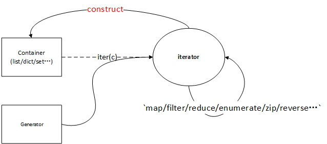

python 迭代器和惰性计算、函数式编程基础
本文介绍了python 的生成器，构造一些有趣的惰性计算程序，可以作为python函数式的基础。
1. iterator and generator
众所周知，python3里面的range返回是一个对象而不是列表，它的前身是python 2的xrange。python 2里面的range会生成一个列表，当这个列表很大时，会有严重的性能问题:
for x in range(0,100000):
print(x)
可以使用iter(range(0,100000))将range对象转换为可迭代实例（iterator），下面的代码是和上面代码等价的：
lst=iter(range(0,10))
while True:
try:
b = next(lst) # 调用lst.__next__()
print(b)
except StopIteration:
break
显而易见，其实python的for循环其实是个语法糖，首先隐式将list（可迭代对象）转换为list_iterator，然后不断调用迭代器的__next__函数，直到出现StopIteration为止；下面是一个迭代器的实例（注意内部函数__next__）：
class fibonacci:
'''To use this class like this
for n in fibonacci(100):
print(n, end=',')
'''
def __init__(self, max):
self.max = max
#可迭代对象实现了__iter__方法，str、list、set、dict、file、sockets等容器都有这个内部函数
def __iter__(self):
self.a = 1
self.b = 1
return self
def __next__(self):
fib = self.a
if fib > self.max:
raise StopIteration
self.a, self.b = self.b, self.a + self.b
return fib
使用也很简单，首先生成一个迭代器对象,然后调用next函数就可以了,我们这里使用enumerate函数生成组合迭代器返回索引和内部迭代器返回值(类似的api还有zip、reversed)：
fib = fibonacci(20)
print(next(fib))
# more next(fib)...
for i,n in enumerate(fibonacci(20)): # 不能重复使用fib对象！
print('fib[', i, ']=', n, end='\n')
根据python doc的描述，迭代器内部是有状态的，每次取一个值都会消耗迭代器的状态。需要注意的是range并不是一个迭代器，因此可以重复使用，其长度并不会因为遍历过而变化。因此并重复使用一个range对象是安全的，而上面的fib对象并不能重复从fib(0)计算。
另一个普遍使用产生迭代器的方法是生成器（generator)，即使用yield返回值;还有少见的生成器表达式也能构造生成器：
def FibonacciIter(n):
a, b, c = 1, 1, n
while c > -1:
yield a
a, b, c = b, a + b, c - 1
# a is a <class 'generator'>
a = (x*x for x in range(10))
上面的fibonacci generator和迭代器对象(iterable)使用方法一样，都可以使用next取出下个返回值，当生成n个fibonacci数后，会耗尽并返回。
fib_gen = FibonacciIter(6)
b = 0
while 1:
try:
b = next(fib_gen)
except StopIteration:
break
print(b, end=' ')
除了使用for循环取值，还可以使用生成器构造list，或使用map、filter、reduce等函数进行计算：
# 使用generator构造list
list(FibonacciIter(6)) # [1, 1, 2, 3, 5, 8, 13]
a = FibonacciIter(6)
print(list(map(lambda x: x**2, a))) # [1, 1, 4, 9, 25, 64, 169]
为了验证生成器是惰性的，我们使用一个筛法生成素数数列:
# 奇数生成器
def _odd_iter():
n = 1
while True:
n = n + 2
yield n
# 整除
def _not_divisible(n):
return lambda x: x % n != 0
# a generator for prime number
def PrimesIter():
#素数不包括1，从2开始
yield 2
it = _odd_iter()
while True:
n = next(it)
yield n
it = filter(_not_divisible(n), it)
生成器PrimesIter首次返回2（2是特殊素数，其他素数全为奇数），然后在奇数生成器的基础上进行过滤运算(筛法)：首先奇数生成器返回3, 这个是素数，yield n处返回，it看做一个惰性数列(现在是3之后的奇数)，使用filter函数将这个数列里面所有被3整除的奇数全部过滤掉，并返回一个迭代器重新赋值给it，里面包含所有素数。继续下次循环会过滤掉所有5整除的奇数…实际上这个it会被重复包裹成**...filter(__not_divisible(5), filter(__not_divisible(3),it)**,while每循环一次，就多加一层filter。
2. itertools and basical usage
无限生成器可以永久运行下去，很容易造成死循环，幸好python库提供了itertools用于处理这些情况, 我们参考python doc编写了一些使用的itertools扩展 api：
from itertools import islice,takewhile
# get first n elements from iter,#take(itertools.count(1,2), 5) will get [1,3,5,7,9]
def take(iter, n):
return list(islice(iter, n))
# takeWhile elements {x} from iter, until f(x) is false
# iter should be a infinate generator
def takeWhile(iter, f):
return list(takewhile(f, iter))
# return a list contains prime numbers
def takePrimesBy(flt):
return takeWhile(PrimesIter(), flt)
def isPrime(n):
for i in takePrimesBy(lambda x: x < math.sqrt(n)):
if n % i == 0:
return False
return True
# generate N primes.
def takePrimes(N):
return take(PrimesIter(), N)
# generate prime less then N.
def getPrimes(N):
return takePrimesBy(lambda x: x < N)
有了素数生成器，很容易构造一个正整数分解生成器（参考我写的fold/unfold文章）:
# decompose N into \Mult{x_i}, x_i is prime
def DecomposeIter(N):
c = N
while True:
p = takePrimesBy(lambda x: x <= math.sqrt(c))
s = [x for x in p if c % x == 0] # 取出所有可能的素因子
if len(s) < 1:
yield c # c是素数
break
else:
c = int(c / s[0]) # 第一个素因子s[0]
yield s[0]
验证方法是使用list取出生成器的值:
print(list(DecomposeIter(123))) # [3, 41]
3 container and iterators
除了list，其他所有容器set/dict都能使用for循环遍历，即说明这些容器是可迭代的(iterable),另外字符串、文件、socket等容器也是可以生成迭代器的。除了使用for循环遍历容器/迭代器，我们还可以使用迭代器/生成器构造容器,第2节里面已经出现很多使用list读取生成器内容的用法，当然也可以用结合enumerate生成dict:
iter = PrimesIter()
dict(enumerate(islice(iter, 10))) #{0: 2, 1: 3, 2: 5, 3: 7, 4: 11, 5: 13, 6: 17, 7: 19, 8: 23, 9: 29}
# get first 10 fibonacci number
import profile
a = range(0,10)
profile.run('list(zip(a,PrimesIter()))')
我们在使用filter/map/reduce等函数将容器进行转换时，实际上可看做是对容器的迭代器进行操作（注意他们并不直接返回结果，而是返回另一个迭代器！），比较接近于FP风格。
